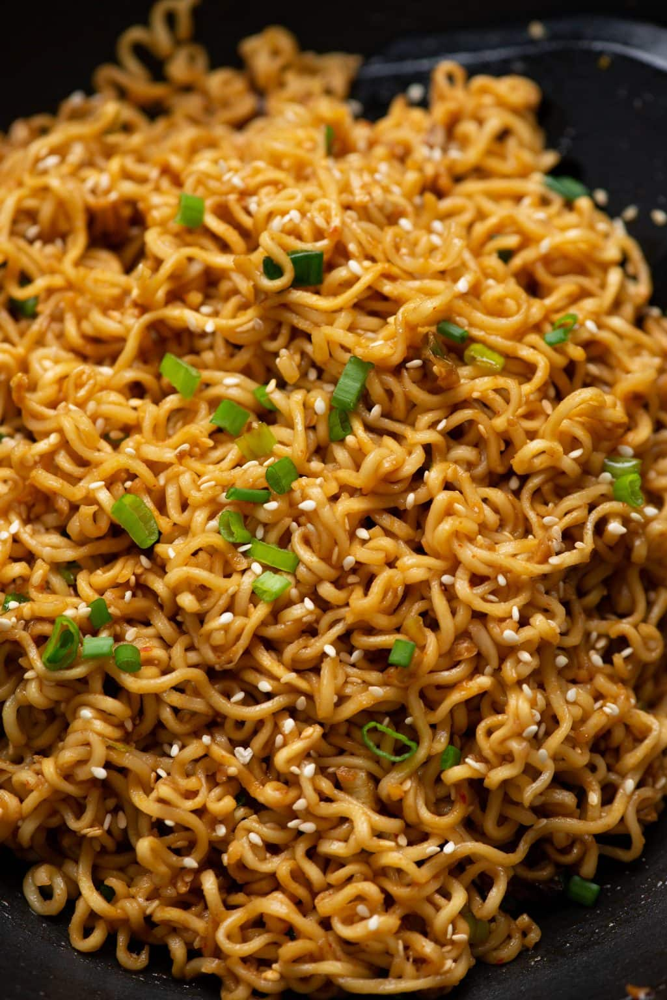

Ramen Noodles

Ramen noodles are my favorite quick and easy meal
Description
As with most of my recipes, there is a lot of room for creativity.
Perfect for those cold days and you just want something warm and
fulling.
Ingredients
- Ramen noodles
- Hot water
- Frozen peas and carrots
- Balsamic vinegar or Chinese black vinegar
- butter or margarine
- spices
- can of mushrooms
- fresh chives
- seasame seeds
Steps
- Heat up your hot water
- put noodles in bowl and break in half if desired
- add your spices, butter, and vinegar ontop of the noodles
- pour hot water into the bowl
- put your frozen veggies and mushrooms in a strainer in the sink and pour hot water on them until thawed
- stir noodles to make them soften evenly and pour warmed veggies into the bowl
- top with chives and sesame seeds